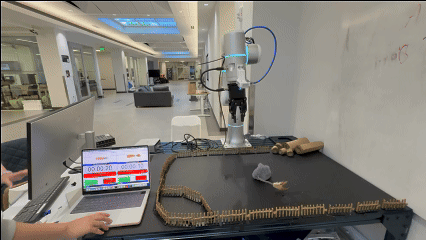
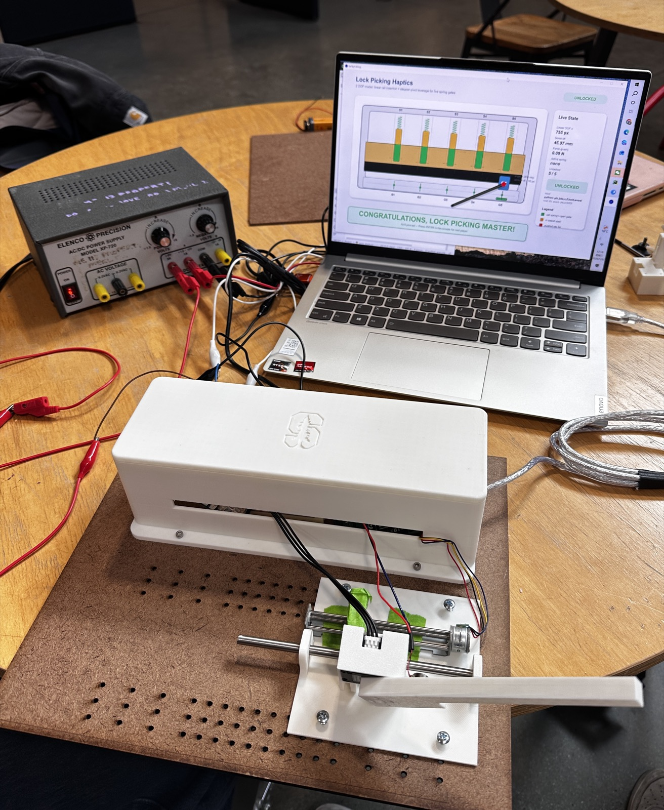
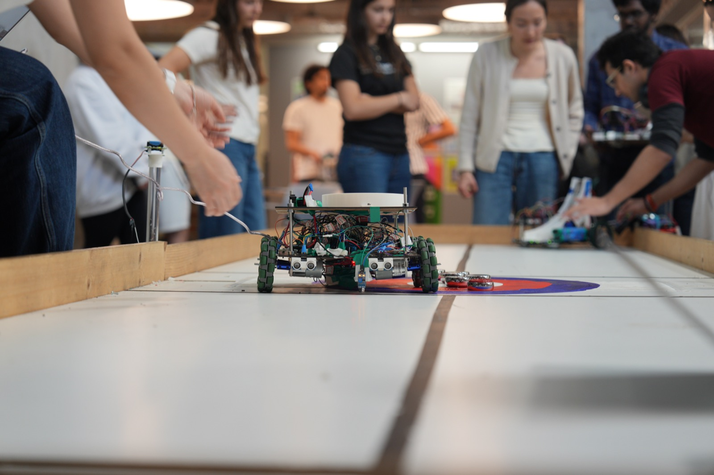

|
Run Shi
I am an M.S. student in Mechanical Engineering at
Stanford University.
I received my B.Eng. in Energy and Power Engineering from
Shanghai Jiao Tong University,
where I built a foundation in mechanical design, thermal engineering, and mechatronics integration,
and spent an exchange semester at the
Karlsruhe Institute of Technology in Germany.
I worked as a Thermal Control Intern at Tesla in Palo Alto, where I developed and
validated physics-based thermal models and built estimation and control algorithms for HVAC and heat-pump systems.
I also interned at Tesla in Shanghai as a hardware test intern, working on high-voltage and low-voltage
reliability and abuse testing of batteries, drive units, and high-voltage distribution devices.
Feel free to reach out!
Email: shirun0127@gmail.com
Resume /
LinkedIn
|
|
Education
Stanford University
Sep. 2025 – Present
M.S. in Mechanical Engineering
Stanford, CA
Shanghai Jiao Tong University
Sep. 2021 – Jun. 2025
B.Eng. in Energy and Power Engineering
Shanghai, China
Karlsruhe Institute of Technology
Apr. 2024 – Sep. 2024
Exchange Semester in Mechanical Engineering
Karlsruhe, Germany
|
Experience
Tesla · Thermal Control Intern
Jun. 2026 – Sep. 2026
Palo Alto, CA
- Developed and validated physics-based models for thermal systems, correlating simulations against bench and vehicle test data to improve thermal performance.
- Developed estimation and control algorithms for thermal systems, including HVAC and heat pump, to improve thermal system performance.
- Characterized heat-exchanger and refrigeration-cycle performance, closing the loop on fleet thermal control performance.
Tesla · High Voltage and Low Voltage Hardware Test Intern
Apr. 2025 – Sep. 2025
Shanghai, China
- Supported high-voltage hardware reliability testing, providing data for hardware design changes and failure analysis.
- Developed scripts for multi-drive-unit reliability thermal testing, with automatic data upload to MySQL.
- Supported low-voltage battery reliability testing; independently developed tests that provided data for battery management board design changes.
|
Technical Skills
Programming: Python, C++, C
Tools & Software: Git, CATIA, SolidWorks, FEA, Creo, Fusion, UG NX, MATLAB, PCAN, MySQL, LabVIEW, OpenSAI, Ansys, COMSOL, Arduino
Skills: Mechanical Design & Manufacturing (DFMEA, FEA, DFA, prototyping design), Mechatronics (embedded systems, analog circuits, digital electronics), Thermal Modeling & Simulation, Material Characterization
|
Publications
-
Water-Stable, Biodegradable, and Flexible Glycine-Based Piezoelectrics via Multi-Length-Scale Composite Engineering
Z. Zhang, Z. Xu, R. Shi, C. Kim, A. Patel, C. Dai, V. R. Feig
Advanced Functional Materials, 2026, e78513
|
Research
Injectable In-situ Formed Piezoelectric Biocomposites with Magnetic Alignment
Stanford University · Stanford, CA
Sep. 2025 – Present
- Fabricated Janus heterostructures with single-sided magnetism by depositing ultra-thin layers of superparamagnetic nanoparticles onto microrods via electro-hydrodynamic (EHD) coating.
- Designed a magnetic-assisted alignment strategy to orient microrods, overcoming random dipole distribution and enhancing the macroscopic piezoelectric constant.
- Developed an HSA-BB-EOH-based injectable, biocompatible composite that achieves rapid in-situ gelation in physiological environments via solvent exchange.
Thermodynamic Study on Ferroelectric Polymer Films
Forward Interdisciplinary Research Center, SJTU · Shanghai, China
Oct. 2024 – Jun. 2025
- Improved material properties for refrigeration device performance based on force-electrical-thermal coupling parameters.
- Applied soft-material characterization methods, including electrocaloric effect, dielectric property, and polarization measurements, and displacement/stress testing under electric-field drive.
Cascade-unit Elastocaloric Cooling Regenerator
Institute of Microstructure Technology, KIT · Karlsruhe, Germany
Jun. 2024 – Sep. 2024
- Designed an elastocaloric experimental platform in Creo to improve the efficiency of solid-state cooling systems.
- Performed finite element analysis in Ansys to optimize machine parts for strength while maximizing cooling performance.
- Designed a variable cross-section compression device that accommodates elastocaloric structures of different sizes.
|
|

|
Vision-Guided Robotic Tracking and Grasping
Stanford CS225A · Mar. 2026 – Jun. 2026
Developed a closed-loop visual servoing system for a 7-DoF Flexiv Rizon4S robotic arm, enabling autonomous target detection, tracking, grasping, and relocation through eye-in-hand RGB-D perception and operational-space control.
Demo Video / Code
|
|

|
Lock Picking Master: A Haptic Lock-Picking Simulator
Stanford ME327 · May 2026 – Jun. 2026
Designed and built a 2-DoF haptic interface integrating custom mechanical hardware, real-time force rendering, and vibrotactile feedback to simulate lock-picking interactions through spring-damper modeling and closed-loop motor control.
Course Page / Demo Video
|
|

|
Autonomous Robotics — Joy of Curling
Stanford ME210 · Jan. 2026 – Mar. 2026
Designed and built an Arduino-based autonomous mobile robot integrating drivetrain control, multi-sensor navigation, and a servo-actuated launching mechanism, achieving a Top-5 finish in the final design competition.
|
|
|
Saxaul Seedling Auto-Planting Robot
SJTU Innovation Practice Program (Team Lead) · Oct. 2023 – Sep. 2024
Led the design of a solar-powered desert reforestation vehicle with an innovative
hollow-drill seedling mechanism, field-tested in the Tengger Desert.
Top 1% Investment Award — Tencent ‘Light’ Technology Charity Creation Camp
|
|